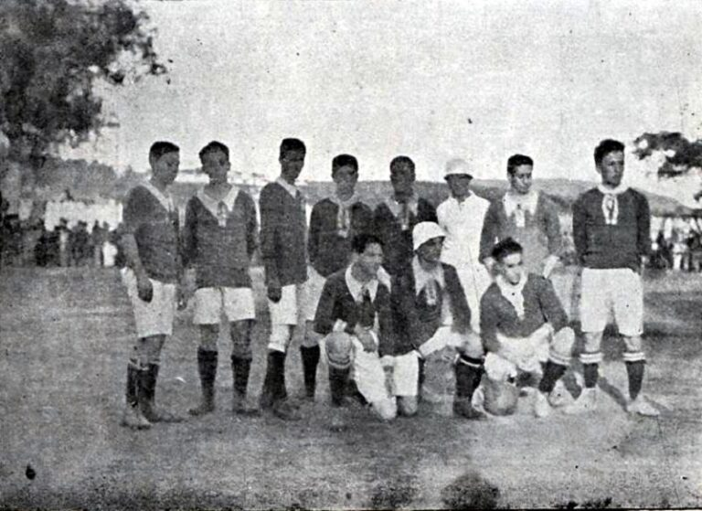
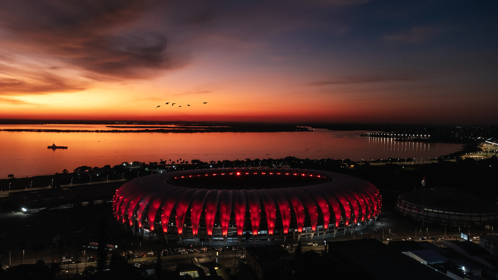

a Fundação (1909)
Fundado em 1909 sob a bandeira da inclusão social, o Sport Club Internacional construiu uma das trajetórias mais gloriosas do futebol sob a alcunha de Clube do Povo. De sua primeira era de ouro com o avassalador Rolo Compressor nos anos 1940, o Colorado pavimentou seu caminho até a elite nacional nos anos 1970, liderado por Falcão e Figueroa, quando conquistou o inédito e ainda único tricampeonato brasileiro invicto. O ápice dessa história moldada pela paixão da torcida — que ajudou a erguer o Gigante da Beira-Rio — veio no início do século XXI, quando o clube conquistou a América e o planeta ao derrotar o Barcelona no Mundial de 2006, consolidando-se definitivamente como um gigante do futebol mundial, dono de duas Libertadores e de uma das camisas mais pesadas do continente. "Clube do Povo".

O Gigante da Beira-Rio
Eternizado como o "Gigante do Guaíba", o Estádio Beira-Rio nasceu de uma verdadeira epopeia popular entre 1956 e 1969, quando a própria torcida colorada — unida pelo amor ao clube — ajudou a erguer a estrutura original carregando tijolos e sacos de cimento para aterrar as margens do rio. Décadas mais tarde, essa histórica casa passou por uma metamorfose espetacular entre 2012 e 2014 para se tornar subsede da Copa do Mundo, ganhando instalações modernas, arquibancadas coladas ao gramado e uma icônica cobertura translúcida de última geração que se ilumina em vermelho nas noites de jogos. Assim, o Beira-Rio se reinventou como uma das arenas mais modernas e vibrantes do planeta, sem jamais apagar o suor e o DNA comunitário de suas fundações.
